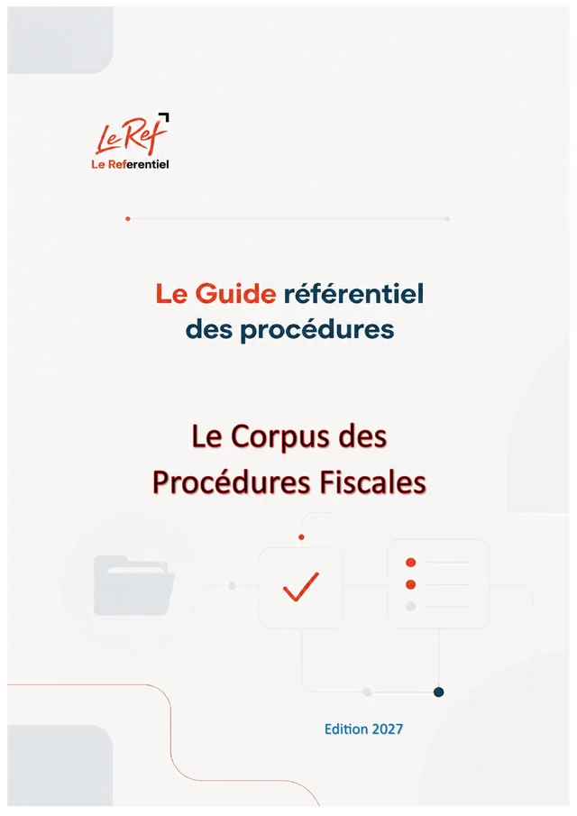

Maroc · FISC · Édition 2026
Guide pratique des procédures et démarches fiscales
Le Corpus des Procédures Fiscales
Créer, déclarer, payer, investir, restructurer, se défendre : les démarches auprès de l'administration fiscale marocaine, à jour du Code général des impôts et de la loi de finances 2026.
- 152paragraphes
- 34chapitres
- 7parties
- 35fichiers JSON
- 105pages (PDF)
Disponible prochainement (option d'achat)
Pages préliminaires et annexes
Contenu
152 paragraphes · 34 chapitres · un fichier JSON par chapitrePartie 1Cadre général
10 paragraphes
1.2 L’architecture du système fiscal marocain après les réformes 2023-2026
- 1-010La loi-cadre n° 69-19 et le cycle des réformes
- 1-011La structure du Code Général des Impôts
- 1-012Les acteurs institutionnels de la procédure fiscale
- 1-013Panorama des impôts et taxes de l’opérateur économique
- 1-014Les taux d’IS définitifs : fin de la période transitoire
- 1-015Les principales nouveautés de la loi de finances 2026
Partie 2Créer et identifier son activité
22 paragraphes
Partie 3Les obligations courantes
45 paragraphes
3.4 La taxe sur la valeur ajoutée
- 3-030Le champ d’application
- 3-031Les taux
- 3-032Le fait générateur et la déduction
- 3-033Les déclarations et paiements
- 3-034Les exonérations : sans ou avec droit à déduction
- 3-035L’exonération des biens d’investissement (36 mois + 24 mois)
- 3-036Le remboursement du crédit de TVA
- 3-037Les prestataires étrangers de services numériques
- 3-038Les régimes transitoires lors d’un changement de taux ou de régime
3.6 Les droits d’enregistrement et de timbre
- 3-060Les actes soumis à l’enregistrement et les délais
- 3-061Les taux en vigueur en 2026
- 3-062Cessions de titres et abandons de comptes courants (Recueil DGI, Q10)
- 3-063L’enregistrement électronique et ses nouveaux contrôles
- 3-064La fiche de renseignements grevant l’immeuble (TH/TSC)
- 3-065Les exonérations notables de droits d’enregistrement
- 3-066Les droits de timbre
3.7 Les autres taxes de l’opérateur
- 3-070La taxe spéciale annuelle sur les véhicules (TSAV)
- 3-071La contribution sociale de solidarité sur les bénéfices et revenus
- 3-072La CSS sur les livraisons à soi-même de construction
- 3-073La taxe spéciale sur le ciment (codifiée en 2025)
- 3-074La taxe sur les contrats d’assurances
- 3-075La CSS sur les bénéfices des entreprises de jeux de hasard (LF 2025)
- 3-076Les taxes locales gérées par la DGI
Partie 4Investir et se développer
29 paragraphes
4.2 La promotion immobilière : le parcours fiscal complet
- 4-010La promotion immobilière : le parcours fiscal complet — présentation
- 4-011Étape 1 — Structurer le véhicule
- 4-012Étape 2 — Acquérir le foncier
- 4-013Étape 3 — Construire
- 4-014Étape 4 — Vendre
- 4-015Le logement social : le circuit du remboursement de TVA à l’acquéreur
- 4-016Gérer après la vente : syndics et centres commerciaux
- 4-017Exemple de rétroplanning fiscal d’une opération